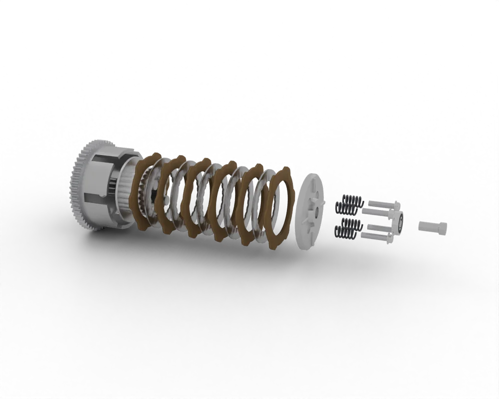
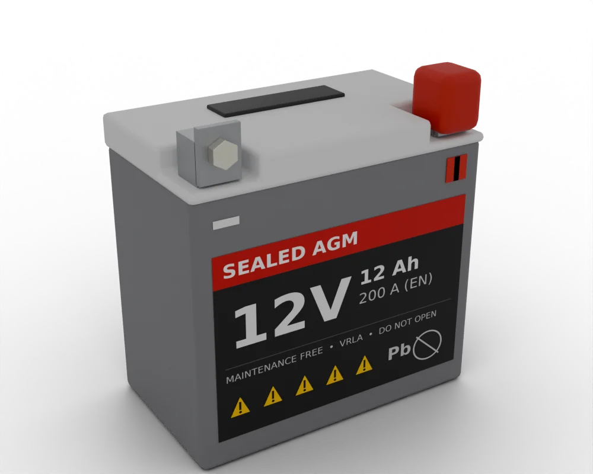
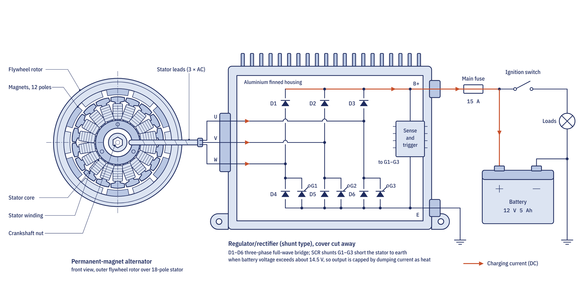
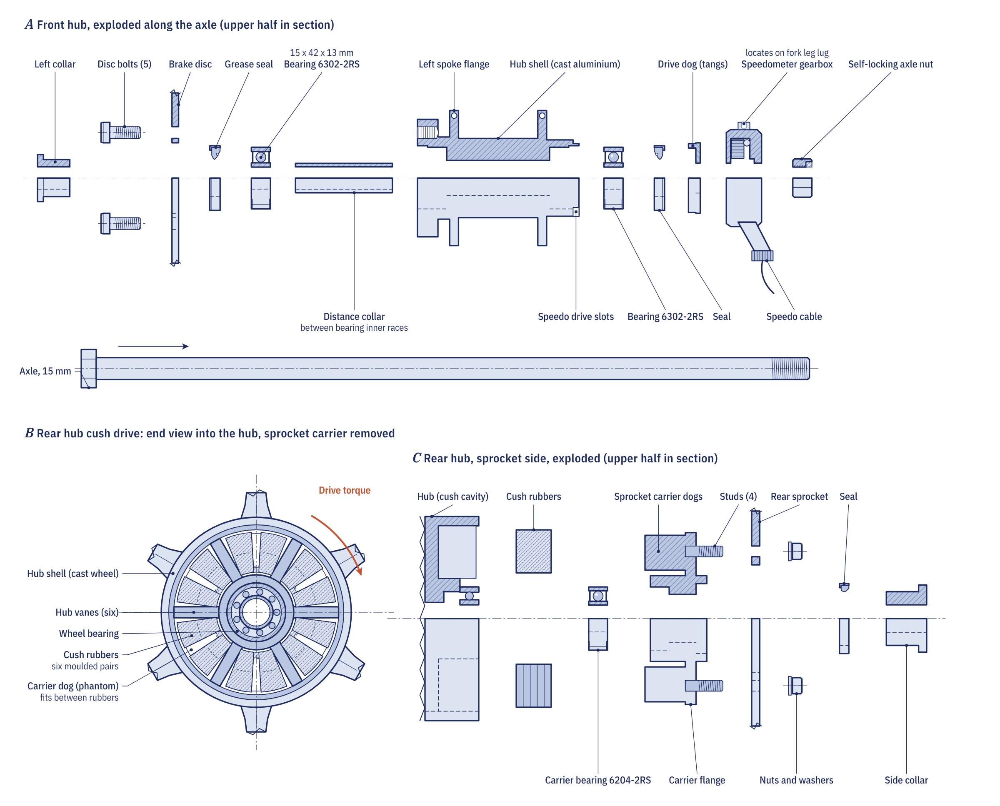
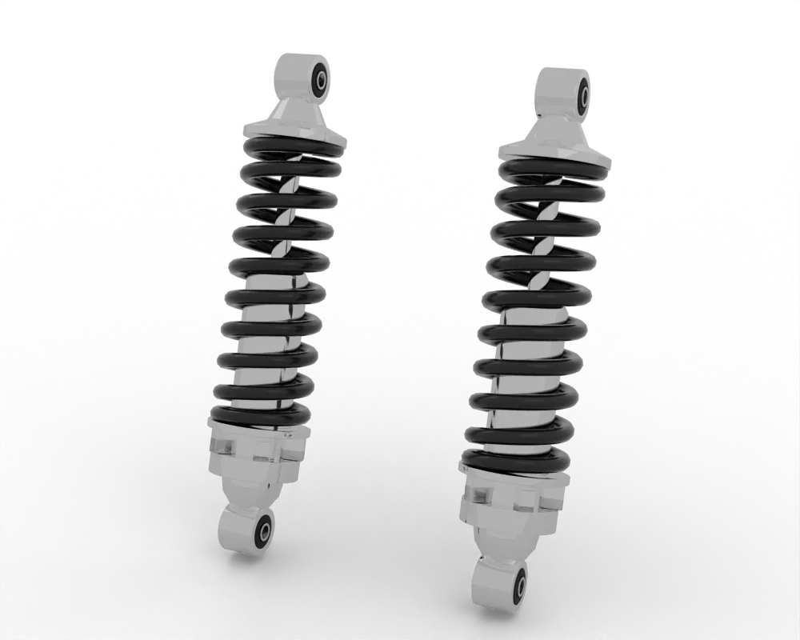

Spare parts / Harley-Davidson / Street Glide
Touring · US
Harley-Davidson Street Glide spare parts
17 parts for the Harley-Davidson Street Glide: what wears, when to replace it, where to buy it and how to fit it.
1868-1923 ccBelt driveDisc brakesPetrol
Engine

3D render Plate
PlateBrakes
 3D render
3D render 3D render
3D renderIgnition

Intake

Fluids

Electrical

3D render 3D render
3D render
PlateWheels
 3D render
3D render
PlateControls

Body
Suspension
 3D render
3D render
3D renderDrivetrain
Service schedule for the Harley-Davidson Street Glide
Indicative intervals. The owner's manual for your model wins.